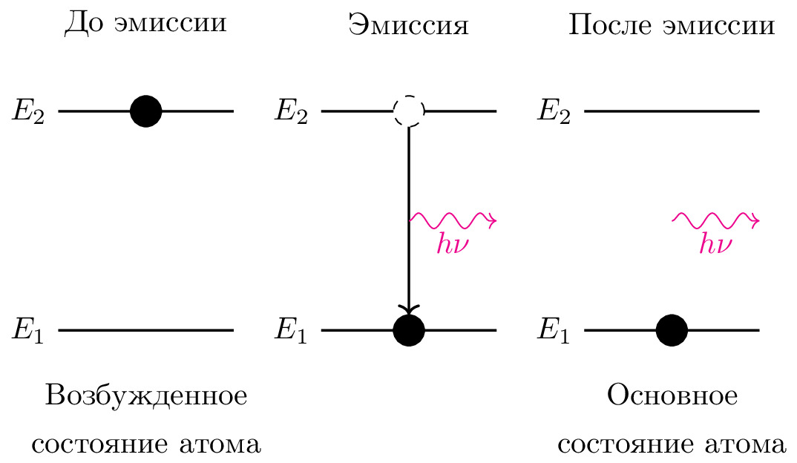

pre.tex
\documentclass[tikz]{standalone}\input{pre.tex}\begin{document}\begin{tikzpicture}
% \xdef\darkness{0}
% \xdef\op{0.1}
% \xdef\SIZE{10}
% \draw[step=1.0,blue,thick,opacity=\op] (0,0) grid (\SIZE,\SIZE);
% \draw[step=0.5,blue,very thin,opacity=\op] (0,0) grid (\SIZE,\SIZE);
% \foreach \i in {0,1,...,\SIZE} {
% \draw[opacity=\op] (0,\i) node [left] {\i};
% \draw[opacity=\op] (\i,0) node [below] {\i};
% }
\begin{scope}[xshift=-3cm]
\draw [thick] (0,0) node [left] {$E_1$} -- ++(2,0);
\draw [thick] (0,2.5) node [left] {$E_2$} -- ++(2,0);
\draw[fill=black] (1,2.5) circle (5pt);
\end{scope}
\begin{scope}[xshift=0cm]
\draw [thick] (0,0) node [left] {$E_1$} -- ++(2,0);
\draw [thick] (0,2.5) node [left] {$E_2$} -- ++(2,0);
\draw[thick,->] (1,2.5) -- (1,5pt);
\draw[dashed, fill=white] (1,2.5) circle (5pt);
\draw[fill=black] (1,0) circle (5pt);
\draw [decorate, magenta, decoration={snake}, ->] (1,1.25) --
node [below,sloped]{$h\nu$} ++(1,0);
\end{scope}
\begin{scope}[xshift=3cm]
\draw [thick] (0,0) node [left] {$E_1$} -- ++(2,0);
\draw [thick] (0,2.5) node [left] {$E_2$} -- ++(2,0);
% \draw[thick,->] (1,2.5) -- (1,5pt);
% \draw[dashed, fill=white] (1,2.5) circle (5pt);
\draw[fill=black] (1,0) circle (5pt);
\draw [decorate, magenta, decoration={snake}, ->] (1,1.25) --
node [below,sloped]{$h\nu$} ++(1,0);
\end{scope}
\node [align=center] () at (-3+1,-1) {Возбужденное \\ состояние атома};
\node [align=center] () at (3+1,-1) {Основное \\ состояние атома};
\node [align=center] () at (-3+1,2.5+1) {До эмиссии};
\node [align=center] () at (0+1,2.5+1) {Эмиссия};
\node [align=center] () at (3+1,2.5+1) {После эмиссии};
\end{tikzpicture}\end{document}